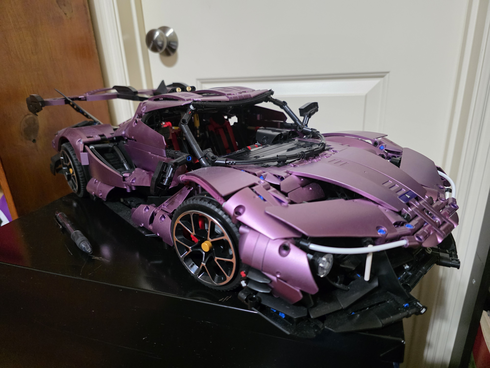
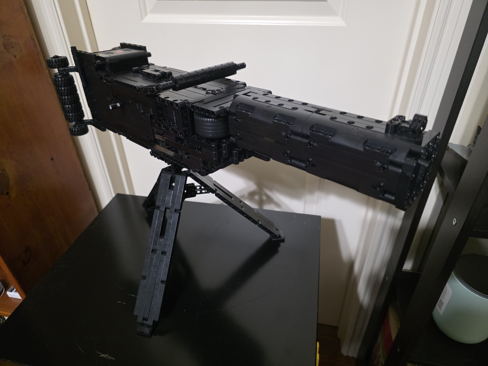
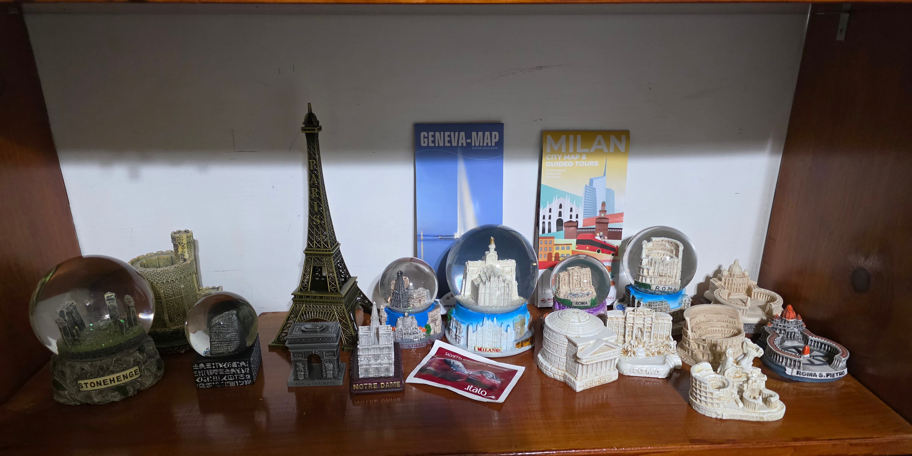
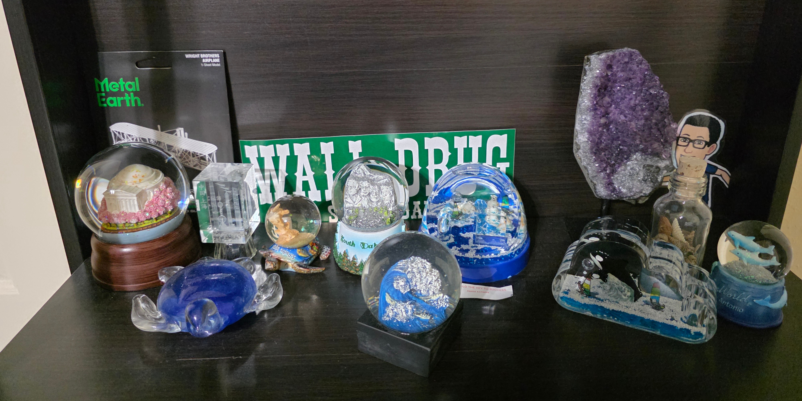

I enjoy LEGO-style building from the realism that it provides and the easiness (most of the time) it takes to make such interesting models
When it comes to the types of sets I build, I mainly build cars, franchise pieces (especially star wars), architecture, and even weapons.
The reason I say LEGO-style instead of just LEGO is that I don't often get these builds from LEGO, I don't care about the brand, I only care about the result.


LEGO building influences the way I approach my project. It taught me how to break bigger ideas into smaller ones and iterate until something works. This mindset is a huge part of how I build things today.
I mainly play on my PC and have many games on it currently. I often play certain MMOs and ARPG games, but I don't limit myself to those types.
Diablo 4 is a dark fantasy game where you, a wanderering warrior, figure out how to locate and defeat many demons of different strengths and sizes, eventually leading to an encounter with the Daughter of Hatred: Lilith. You make both allies and enemies along the way, and who you thought could be a powerful ally could later be a powerful enemy, and vice versa...
Diablo 4 also has 2 expansion packs: Vessel of Hatred and Lord of Hatred, where it adds content and new areas for your wanderer to explore and fight!
PLEASE NOTE THAT THIS GAME HAS VERY FREQUENT VIOLENCE AND GRAPHIC GORE IN IT, AVOID SHOWING THIS TO CHILDREN WHO MIGHT GET UNCONFORTABLE WITH SUCH ELEMENTS
Learn more about what's currently going on in Diablo 4 here.
Diablo 4 taught me many aspects of organization and excecution while following build guides and instructions on guides. The game hosts many mechanics that will get your mind thinking under pressure and reacting accordingly.
Like Diablo 4, Diablo 3 is also about a wanderer defeating many different demons and archdemons. In fact, some side characters are in both games! It has an expansion pack: Reaper of Souls, that mainly extends the story.
PLEASE NOTE THAT THIS GAME ALSO HAS VERY FREQUENT VIOLENCE AND GRAPHIC GORE IN IT, AS SAID BEFORE AVOID SHOWING THIS TO CHILDREN WHO MIGHT GET UNCONFORTABLE WITH SUCH ELEMENTS
Learn more about Diablo 3 here.
Other than what Diablo 4 taught me, Diablo 3 also taught me many motor skills since I played this game on an xbox controller rather than a keyboard. I also played this game before Diablo 4 was released!
Lost Ark is a MMORPG (Massive Multiplayer Online Role-Playing Game) where you are a warrior that collects lost, hidden artifacts called arks. It requires you to travel through many different continents by sea. The difficulty mechanics and the gear mechanics greatly differ from that of Diablo 3 and 4.
THIS GAME DOESN'T HAVE GORE, BUT IT DOES HAVE VIOLENCE
Learn more about Lost Ark here
I played Lost Ark between Diablo 3 and 4, and the boss mechanics really taught me how to memorize movements and how to react to certain patterns much more than Diablo 3 and 4
Civilization 4 is a completely different game compared to the previous games mentioned, that being a strategy game instead where you take control of an empire at basically almost any aspect, such as production, war, research, and even espionage!
Civilization 4 also has many different versions and expansions, such as Beyond the Sword.
This game is probably the most family friendly of all of the games that I've mentioned so far, with no gore and little, if any, violence. Although it might involve historically controversial figures and ideas
Learn more about Civilization 4 here
I often travel either with my family or when the school does so, nevertheless, I have fun any way.
As an immigrant from China, I visit the country every 2 years to see family again. Even though most of the time it's with older-generation relatives, I sometimes get to meet with my cousins. (The reason I don't see them often is that Chinese high school usually end a lot after our does, but also starts later.)
I also like to collect souvenirs from the places I visit!


Overall, these trips give me a long break from those stresful school days. Even though sometimes assignemnts or exams still get to me despite the fun moments, the big and little moments that I have during these trips always work to distract me from those looming projects and tests.